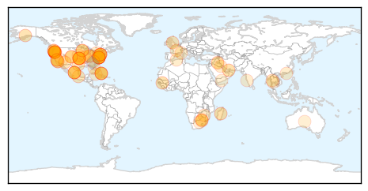
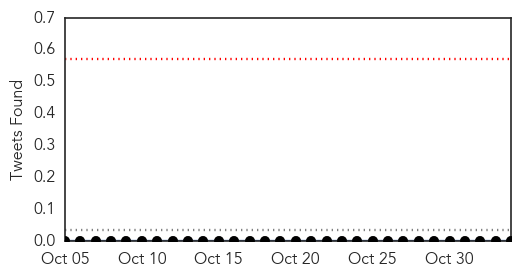
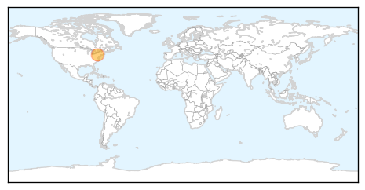

Unknown
30-Day Web Trend
0 alerts, 0 warnings
30-Day Twitter Trend
0 alerts, 0 warnings
Article Locations
Article Confidences
Top Articles:
- 0.996
- Plague outbreak kills 40 people in Madagascar
- 0.987
- Give flu vaccine a shot
- 0.976
- Hospital’s late response to outbreak is questioned-INSIDE Korea JoongAng Daily
- 0.975
- Oregon E. coli cases rise to 12 in Chipotle outbreak
- 0.963
- More Oregon Cases Of E Coli, Including Deschutes County
- 0.936
- Latest results show Legionella bacteria was present at St. Joseph's Hospital
- 0.925
- 'Potential of selected Senegalese Aedes spp. mosquitoes (Diptera: Culicidae) to transmit Zika virus' (BMC Infectious Diseases)
- 0.925
- Get your flu shot
- 0.923
- E Coli Outbreak strikes again! Inquiry linked the outbreak with Chipotle, Chipotle closes dozens of outlets in Washington and Oregon
- 0.915
- Dramatic Increase In Indiana Syphillis Cases
- 0.914
- No-cost flu shots for VA patients
- 0.910
- WHO reveals two-thirds of World’s population is infected by Herpes
- 0.908
- Chipotle Suffers E. Coli Outbreak
- 0.893
- Rare typhoid fever spread at Qdoba restaurant in Colorado
- 0.887
- Second flu clinic scheduled
- 0.884
- No new numbers, but lawsuit already filed in Chipotle outbreak
- 0.879
- CDC: More food poisoning outbreaks cross state lines
- 0.878
- Lancaster Farming
- 0.869
- E. coli cases rise to 37 in Washington state and Oregon as Chipotle illness grows
- 0.867
- Chipotle E. coli cases mount, with many Clark County victims
- 0.848
- E. coli scare sees Chipotle close all Seattle, Portland restaurants
- 0.844
- The Nassau Guardian
- 0.839
- Health Care Workers Commended for Efforts
- 0.833
- New Study: You Probably Have Herpes
- 0.828
- This won’t hurt a bit
- 0.825
- Chipotle Right to Close Restaurants After Food Outbreak, CDC Says
- 0.817
- Multistate outbreaks cause more than half of foodborne disease deaths
- 0.812
- UK and Canadian travelers contract Cyclospora vacationing in Riviera Maya region, Mexico
- 0.802
- Cardiac Surgery Device Linked to InfectionsNewsInferno
- 0.794
- More Chipotle E. Coli cases confirmed in Ore., Wash.
- 0.794
- More Chipotle E. Coli cases confirmed in Ore., Wash.
- 0.792
- Big and deadly: Major foodborne outbreaks spike sharply
- 0.789
- Gonorrhea infection rates spike dramatically in Yukon
- 0.778
- Thinking About Medicines And Personal Care Products In Drinking Water
- 0.776
- People Made Ill By Chipotle Retain High-Profile Lawyer
- 0.775
- Health care workers commended for efforts in the southern islands
- 0.743
- Water crisis could’ve been prevented - Expert
- 0.736
- E. coli Outbreak Forces Chipotle to Shut Down Its Restaurants
- 0.731
- St. Joseph's confirms 2 patients acquired Legionnaires at
- 0.721
- Heat is on Chipotle Amidst E. Coli Outbreak
- 0.712
- Chipotle E. coli cases likely linked to produce
- 0.711
- Three catch Typhoid fever at Firestone, Colorado Qdoba, health officials say
- 0.709
- Chipotle E. coli scare closes dozens of stores in Washington and Oregon
- 0.701
- E. Coli Outbreak Recall: Chipotle Shuts Down 43 Restaurants, Reports Four-Month Low : News : Parent Herald
- 0.682
- E. coli outbreak causes Chipotle to close outlets across Pacific Northwest
- 0.676
- Multistate Foodborne Illness Outbreaks the Most Deadly
- 0.665
- Take Initiatives to Avert the Looming TB-diabetes Co-epidemic Before It Gets Too Late
- 0.639
- Chipotle E. coli O26 Outbreak Investigated by FDA, CDC
- 0.636
- Media Advisory: With the Start of the Flu Season Health Care Leaders Call on Wynne Government to Fix Ontario's Sick Day Policies
- 0.620
- Cases of E. Coli in Oregon, Washington Climb to 37 in Chipotle-Linked Outbreak
Showing top 50 articles...
Top Tweets:
- 0.852
- Fight the flu! Protect yourself & others. Get a flu vaccine every season. https://t.co/NRqMeJDwjz
- 0.598
- Avian Flu Diary: EID Journal: Multi-facility Outbreak of MERS in Taif, Saudi Arabia https://t.co/dMIC0bsTPP https://t.co/YjCWPPyjqE
Mumps
30-Day Web Trend
0 alerts, 0 warnings
30-Day Twitter Trend
0 alerts, 0 warnings

Article Locations
Article Confidences

Top Articles:
Top Tweets:
-
No tweets found for Nov 03, 2015